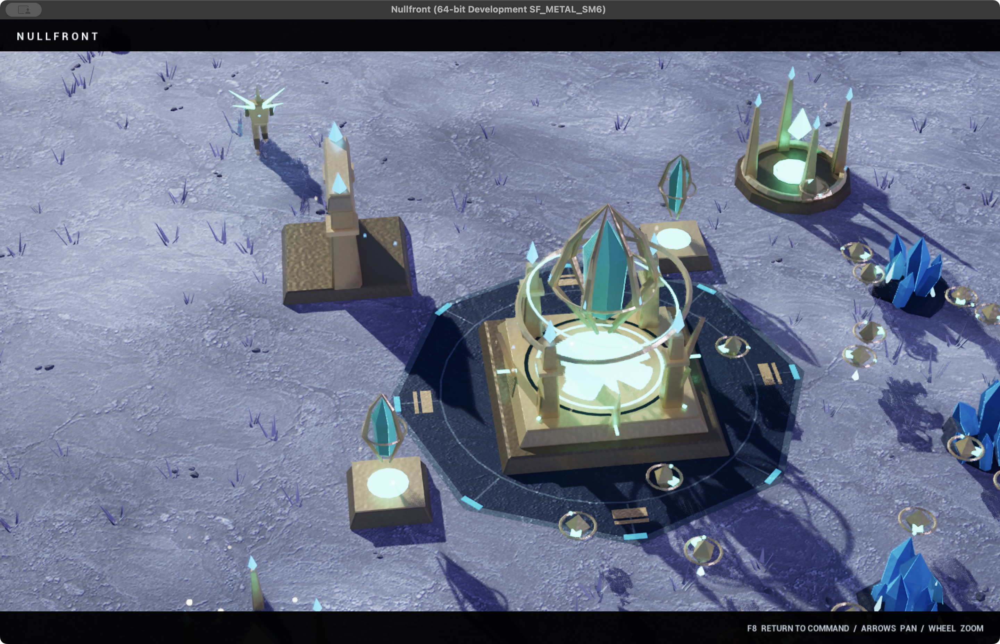
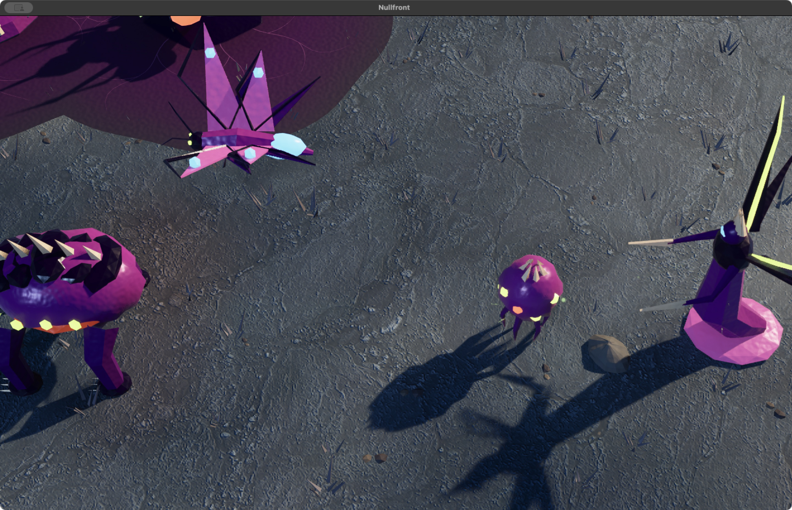

Build an empire.
Turn crystal and flux into a war machine. Expand your base, unlock technology, and reinforce your army.
THE CINEMATIC UPDATE IS LIVE
FRONTIER WARS
THE FRONTIER IS YOURS.
Three factions. Two hostile worlds.
An army waiting for your command.
APPLE SILICON • macOS 14+ • FREE PUBLIC PREVIEW
ALLEGIANCE IS EVERYTHING
Steel, instinct, or light. Choose the power you command.
01 / FACTION DOSSIER
Steel. Discipline. Firepower.
Human orbital industry goes to war. Riggers weld your expanding base while siege armor holds the frontline. Deploy Hammers for long-range fire and call down devastating Orbital Lances.
BOOTS ON ALIEN GROUND
Real captures. Original worlds. Every decision is yours.
 IN-GAME CAPTURE
IN-GAME CAPTURE 
IN-GAME CAPTURE
IN-ENGINE SHOWCASEStep out of command. Into the moment. Switch to a clean cinematic camera, or watch two AI armies clash as the camera follows the action.
THE ART OF COMMAND
Turn crystal and flux into a war machine. Expand your base, unlock technology, and reinforce your army.
Capture the relay with ground troops to earn bonus resources. Hold the advantage. Push for their base.
Deploy with a ready base and strike force, or start from the ground up in Classic Build-up. Choose your AI opponent and difficulty.
YOUR NEXT COMMAND
Choose your side. Leave your mark.
Download free for MacA native Mac game. Download, install, and play.
This public preview is ad-hoc signed and has not been notarized by Apple. macOS may block its first launch. If you choose to run it, follow Apple’s official Open Anyway instructions for this app.
Windows, Intel Mac, browser play, and online multiplayer are not included.
SHA-256 for the Mac ZIP:
f06a41d13976442a5e850b294d862d0f1ffa835c1b2926c097c06e85f0441853Release notes & download files ↗Early public preview · Read the first-launch instructions above.